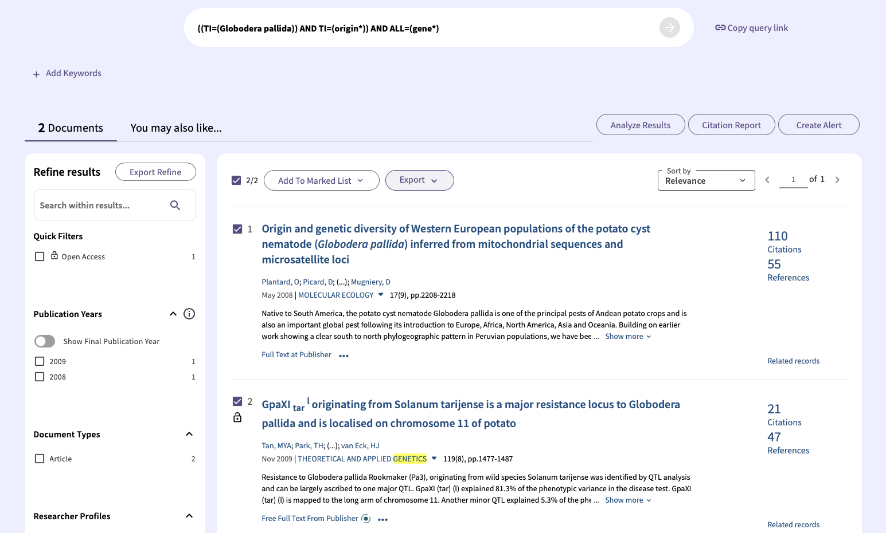
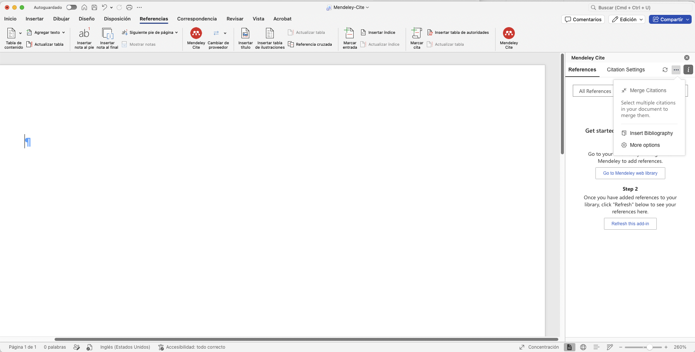

Práctico 1: Herramientas TIC, Búsqueda Bibliográfica y Mediación Humana
La escritura científica es una competencia transversal en la formación de todo biólogo e investigador (Lorenzetti & Ghersi, 2018). Este espacio, concebido como un laboratorio de docencia dentro de la reforma estructural del programa, tiene como propósito fundamental sentar las bases metodológicas para sus futuras investigaciones. Cuando la búsqueda bibliográfica se ejecuta con rigor, permite que un trabajo científico sea divulgado en revistas indexadas de corriente principal, garantizando que los hallazgos puedan ser verificados de forma independiente por la comunidad internacional. Una fase ineludible de cualquier investigación es la revisión del estado del arte: contrastar hipótesis, evaluar metodologías previas y contextualizar los descubrimientos.
En la actualidad, las Tecnologías de la Información y Comunicación (TIC) ofrecen potentes herramientas para gestionar la inmensidad de la literatura. Sin embargo, la rápida adopción de la Inteligencia Artificial (IA) en la academia plantea desafíos complejos. Por un lado, las herramientas especializadas aceleran la síntesis textual; por otro, los modelos de lenguaje de propósito general (LLMs) introducen riesgos críticos como la alucinación de datos y la invención de referencias falsas (Alkaissi & McFarlane, 2023). Adicionalmente, el investigador contemporáneo debe enfrentar los sesgos algorítmicos y editoriales inherentes a los motores de búsqueda, los cuales pueden marginar la literatura científica regional. La rigurosidad exige que la tecnología sea entendida como un asistente técnico y jamás como un sustituto de la mediación humana, el criterio ético y la verificación crítica (Kasneci et al., 2023).
OBJETIVOS DE APRENDIZAJE
- Seleccionar y delimitar un tema de investigación fisiológica que servirá de eje articulador para el proyecto semestral.
- Evaluar y comparar el alcance de diferentes bases de datos científicas (WOS, Scopus, PubMed, Google Scholar) y gestores bibliográficos (Mendeley, Zotero, EndNote).
- Diseñar y ejecutar ecuaciones de búsqueda avanzada utilizando sintaxis precisa, marcas de campo y operadores booleanos en Web of Science aplicadas a su proyecto de clase.
- Administrar y automatizar el flujo bibliográfico personal (PDFs, metadatos, citación automática en MS Word) acorde con formatos de revistas internacionales.
- Desarrollar criterio ético y analítico respecto al uso de Inteligencia Artificial en la academia, distinguiendo entre modelos generativos y plataformas RAG, mitigando sesgos algorítmicos y garantizando la autoría humana reflexiva ante el riesgo de alucinaciones.
1. Contexto e Inscripción del Proyecto Semestral
Esta guía no es un simple ejercicio técnico aislado. El trabajo que realicen hoy constituye la Etapa 1 de su Proyecto Integrador de Semestre. El objetivo de hoy no es buscar únicamente los artículos que van a leer, sino construir una base de datos bibliográfica amplia y robusta sobre su tema general. A partir de la exploración de esta gran colección, ustedes podrán delimitar y definir el enfoque específico que le darán a su revisión bibliográfica.
La biblioteca digital que construyan hoy en Mendeley será la materia prima fundamental para las siguientes fases del laboratorio:
-
Etapa 2 (Disección): Análisis crítico metodológico de 3 artículos seleccionados de su base de datos.
Requisito indispensable: Estos 3 artículos elegidos para la disección deben ser estudios netamente experimentales (literatura primaria original que contenga claramente las secciones de Métodos, Resultados y Discusión). No se aceptan artículos de revisión (reviews) para esta etapa, ya que el objetivo central es evaluar el diseño, ejecución y análisis experimental directo en fisiología animal. - Etapa 3 (Minireview - 10%): Escritura de un artículo de revisión científica estructurado sobre el sub-tema que lograron delimitar, integrando la literatura encontrada y siguiendo rigurosamente el formato de la revista PLOS ONE.
- Etapa 4 (Divulgación - 10%): Creación de un archivo audiovisual o digital basado en los hallazgos de su Minireview, diseñado para el público de la nueva exhibición "Descubriendo cómo funcionan los animales" del Museo de Historia Natural de la UIS.
📥 Instrucciones de Inscripción (Obligatorio)
Deberán organizarse en parejas. Cada pareja debe seleccionar uno de los temas listados a continuación, los cuales corresponden a los capítulos teóricos del curso que profundizaremos mediante literatura primaria.
REGLA ESTRICTA: Ningún grupo puede repetir los temas a trabajar. La asignación es por orden de llegada.
Acceda aquí al documento de inscripción:
[Haz clic aquí para abrir la tabla de inscripción en Google Sheets]
2. El Ecosistema de Búsqueda Bibliográfica: Análisis Comparativo
Una vez inscrito su tema en Google Sheets, el siguiente paso es buscar la literatura. No todas las fuentes de datos bibliográficos son iguales. El sesgo de cobertura geográfica, la velocidad de indexación y los criterios de inclusión dictan qué literatura estará disponible (Mongeon & Paul-Hus, 2016; Martín-Martín et al., 2018).
| Plataforma | Tipo de Cobertura y Control de Calidad | Uso Ideal y Ejemplo en Fisiología Animal |
|---|---|---|
| Web of Science (WOS) | Curaduría altamente selectiva (~21,000 revistas). Excluye literatura gris y revistas depredadoras. Usa el Factor de Impacto (JIF). | Uso: Análisis de vanguardia y revisiones sistemáticas. Ejemplo: Buscar artículos de alto impacto sobre los mecanismos genéticos de adaptación a la hipoxia en aves de gran altitud. |
| Scopus | Más amplia que WOS (~24,000+ revistas). Mayor cobertura multidisciplinaria y regional. Usa CiteScore. | Uso: Búsquedas que incluyen revistas regionales de ecofisiología. Ejemplo: Investigar las tasas metabólicas de anfibios neotropicales publicados en revistas latinoamericanas indexadas. |
| PubMed | Especializada exclusivamente en Ciencias de la Vida y Biomedicina (NLM/NIH). Filtro biomédico estricto. | Uso: Fisiología celular, endocrinología y modelos animales biomédicos. Ejemplo: Analizar las vías de señalización de la insulina en modelos murinos (ratones). |
| Google Scholar | Motor de búsqueda masivo no curado. Incluye desde artículos de máximo impacto hasta literatura no arbitrada. | Uso: Búsqueda exploratoria inicial o localización rápida de PDFs. Ejemplo: Encontrar el PDF de acceso abierto de un artículo antiguo sobre termorregulación usando su título exacto. |
3. Ecuaciones de Búsqueda Avanzada Aplicadas a su Tema
Para encontrar exactamente lo que necesitamos en bases de datos como WOS, debemos traducir nuestro tema elegido en el Google Sheets a una estrategia de búsqueda sólida. Combinaremos etiquetas de campo (ej. TS para Tema/Título/Resumen) con operadores booleanos (AND, OR, NOT) y truncadores (como el asterisco *).
- Operador de truncamiento (*): Buscar
tropic*arrojará resultados para tropic, tropical, tropics. - Operador de exclusión (NOT): Si su tema es tolerancia térmica en ranas, pero no les interesan los estudios toxicológicos sobre contaminación:
TS=(frog* AND thermal tolerance) NOT TS=(pollution OR toxicology). - Operador de proximidad (NEAR/x): Encuentra palabras separadas por un máximo de "x" palabras. Si su tema es animales en buceo (mamíferos marinos):
TS=(marine mammal*) NEAR/5 TS=(diving response).
Uso Avanzado del Query Builder (Constructor de Consultas)
El Query Builder de Web of Science permite diseñar búsquedas bibliográficas de alta precisión. Para dominar esta herramienta, es necesario combinar etiquetas de campo, operadores lógicos y caracteres especiales directamente en la caja de previsualización (Query Preview).
1. Etiquetas de Campo (Field Tags)
Indican al motor de búsqueda en qué sección específica del documento debe buscar su término:
| Etiqueta | Significado | Uso Ideal y Ejemplo |
|---|---|---|
| TS | Topic (Tema) | Busca simultáneamente en título, resumen y palabras clave. Es la etiqueta más utilizada. Ejemplo: TS=(thermoregulation) |
| TI | Title (Título) | Restringe la búsqueda exclusivamente al título del documento. Ejemplo: TI=(reptile*) |
| AU | Author (Autor) | Rastrea toda la literatura publicada por un investigador específico. Ejemplo: AU=(Navas CA) |
| SO | Publication Titles | Filtra artículos publicados únicamente dentro de una revista científica. Ejemplo: SO=(Journal of Experimental Biology) |
2. Operadores Booleanos
- AND (Intersección): Exige que ambos términos estén presentes en el documento. Ejemplo:
TS=(diving) AND TS=(mammal) - OR (Unión): Amplía los resultados agrupando sinónimos. Ejemplo:
TS=(frog OR toad OR anuran) - NOT (Exclusión): Elimina documentos que contengan un término no deseado. Ejemplo:
TS=(metabolism) NOT TS=(plant*)
3. Comodines y Búsqueda Exacta (Caracteres Especiales)
Para no perder artículos debido a variaciones gramaticales, plurales o diferencias ortográficas (ej. inglés británico vs. americano), WOS utiliza símbolos especiales:
| * (Asterisco) |
Representa cero o múltiples caracteres. Es el más común para plurales o sufijos. Ejemplo: behav* buscará behavior, behaviour, behavioral. |
| $ (Signo Peso) |
Representa cero o un carácter. Ideal para diferencias ortográficas sutiles. Ejemplo: colo$r buscará color (cero caracteres extra) y colour (un carácter extra). |
| ? (Interrogación) |
Representa exactamente un carácter. Ejemplo: wom?n buscará woman y women. |
| " " (Comillas) |
Fuerza la búsqueda de una frase exacta, impidiendo que el motor separe las palabras. Ejemplo: TS=("climate change") no buscará "climate" y "change" por separado. |
4. Anidación (Agrupación con Paréntesis)
Al igual que en las matemáticas, los paréntesis ( ) dictan el orden lógico en que se ejecuta la búsqueda. Todo lo que esté dentro del paréntesis se procesa primero.
Ejemplo de ecuación compleja: TS=(("marine mammal*" OR whale*) AND "diving response")
Lectura: Primero agrupa mamíferos marinos o ballenas, y luego cruza ese gran grupo exclusivamente con la frase exacta "diving response".
5. Ensamblaje en la interfaz
La interfaz gráfica del Query Builder está diseñada para facilitar este proceso:
- Cajas desplegables e Inserción automática: Puede seleccionar la etiqueta deseada en el menú desplegable (ej. All Fields), escribir su término y hacer clic en el botón "Add to query" para que el sistema escriba el código por usted.
- Escritura Directa: Los usuarios avanzados pueden teclear su ecuación compleja (con paréntesis, comodines y booleanos) directamente en el recuadro grande.
- Filtros de Fecha: Utilice el botón "+ Add date range" debajo de la caja de previsualización para limitar rápidamente los resultados a los últimos años de publicación sin necesidad de escribir código.
- Historial de Sesiones (Session Queries): Todas las búsquedas que ejecute quedan guardadas temporalmente. Puede combinar resultados de búsquedas anteriores utilizando el símbolo numeral en el Query Builder. Por ejemplo, teclear
#1 AND #2fusionará los resultados de su primera y segunda búsqueda.
Exportación de Resultados desde WOS hacia Mendeley
Una vez que su ecuación de búsqueda avanzada arroje los resultados esperados, el siguiente paso crítico es extraer esa información de Web of Science y trasladarla a su gestor bibliográfico (Mendeley) de forma estructurada, garantizando que no se pierdan metadatos clave como los resúmenes (abstracts), los autores y los enlaces DOI.
Pasos para una exportación y captura exitosa:
- Selección de Documentos: Revise los resultados de su búsqueda y marque las casillas ubicadas a la izquierda de cada artículo que considere pertinente para su proyecto (como se observa en los ítems 1 y 2 de la imagen de referencia).
- Despliegue del Menú de Exportación: Ubique el botón o menú desplegable de Exportación (generalmente sobre la lista de resultados). Al hacer clic, se mostrará una lista con múltiples opciones de plataformas y formatos de salida.
- Selección del Formato Compatible: Para garantizar una sincronización perfecta con Mendeley, no elija formatos de texto plano o Excel. En su lugar, seleccione "RIS (other reference software)" o "BibTeX". Estos son los formatos universales de intercambio bibliográfico.
- Configuración del Contenido (¡Muy Importante!): Tras elegir RIS o BibTeX, el sistema le preguntará qué cantidad de información desea descargar. Asegúrese de cambiar la opción predeterminada a "Full Record" (Registro Completo). Si omite este paso, los artículos se guardarán sin el resumen, lo cual dificultará su posterior lectura y selección. Al finalizar, haga clic en Export para descargar el archivo a su computador.

Leyenda: Figura 1. Menú de exportación en Web of Science tras seleccionar documentos específicos. Se destacan las opciones RIS y BibTeX, idóneas para migrar los metadatos a Mendeley.Importación final en Mendeley
Para finalizar el proceso, abra Mendeley Reference Manager. En la esquina superior izquierda, haga clic en "Add new", seleccione "Import library" y luego elija el formato correspondiente al archivo que acaba de descargar (RIS o BibTeX). Busque el archivo en su carpeta de descargas y ábralo; todos sus artículos aparecerán estructurados automáticamente en su biblioteca personal, listos para ser citados en Word.
4. Gestores de Referencias Bibliográficas (TIC)
Un gestor no es simplemente un organizador de archivos en la nube; es la herramienta que garantiza la reproducibilidad de la citación y ahorra cientos de horas en el formateo de los manuscritos como el Minireview que entregarán en la Etapa 3 (Lorenzetti & Ghersi, 2018). Usaremos Mendeley debido a su excelente integración con MS Word y su capacidad para crear grupos de trabajo colaborativo.
Instrucciones de Instalación: Mendeley y Mendeley Cite
- Descargar Mendeley Reference Manager: Ingrese a la página oficial de descargas y seleccione la versión correspondiente a su sistema operativo (Windows, Mac o Linux). Instale el programa e inicie sesión creando una cuenta gratuita de Elsevier.
- Instalar el Web Importer (Opcional recomendado): Para capturar referencias directamente desde su navegador, instale la extensión Mendeley Web Importer disponible para Chrome, Firefox o Edge.
- Instalar Mendeley Cite en MS Word: Abra Microsoft Word. Diríjase a la pestaña Insertar > Obtener complementos. Busque "Mendeley Cite" y haga clic en agregar. También puede instalarlo directamente desde la Microsoft AppSource.
Flujo de Trabajo en Microsoft Word con Mendeley Cite
Una vez instalado, el complemento Mendeley Cite se convierte en su panel de control para gestionar citas directamente mientras redacta su manuscrito. A continuación, se detallan sus funciones principales:
- Activación del Panel: Diríjase a la pestaña "Referencias" en la cinta superior de Word y haga clic en el ícono rojo de Mendeley Cite para desplegar el panel lateral derecho.
- Insertar Citas (Pestaña References): Aquí podrá visualizar toda su biblioteca. Seleccione las casillas de los artículos que desea citar en un párrafo específico y presione el botón Insert Citation. Si acaba de agregar nuevos artículos a su cuenta desde el navegador, utilice el botón "Refresh" (o las flechas circulares) para sincronizarlos de inmediato.
- Cambiar Formato (Pestaña Citation Settings): Le permite alternar rápidamente entre diferentes estilos de citación (como APA, Vancouver, o el formato numérico de Science). Cualquier cambio realizado aquí reformateará automáticamente todo el documento.
- Generar la Bibliografía Final: Cuando haya terminado de redactar su texto, posicione el cursor en la sección final de su documento. Haga clic en el menú de los tres puntos (...) ubicado en la esquina superior derecha del panel de Mendeley y seleccione "Insert Bibliography".

Leyenda: Figura 2. Interfaz de Microsoft Word con la pestaña "Referencias" activa y el panel lateral de Mendeley Cite desplegado, destacando el menú secundario (...) necesario para insertar la bibliografía.
Al utilizar la pestaña Citation Settings del plug-in, pueden cambiar la apariencia de sus citas en el texto con un solo clic sin reescribir nada.
Estilo de citas numéricas (ej. Science o PLOS ONE):
"Los cocodrilos presentan un corazón tetracameral con un foramen de Panizza que permite derivar la sangre durante el buceo 1, 2]."
Estilo de autor y año (ej. Harvard o APA):
"Los cocodrilos presentan un corazón tetracameral con un foramen de Panizza que permite derivar la sangre durante el buceo (Marchant, 2017; Pérez et al., 2021)."
5. Inteligencia Artificial en la Academia: Tipologías, Sesgos y Alucinaciones
El ecosistema de la Inteligencia Artificial (IA) ha evolucionado rápidamente, pero es crucial entender que no todas las herramientas operan bajo los mismos principios. Para la investigación científica, debemos distinguir entre modelos de lenguaje probabilísticos y motores de búsqueda académicos asistidos por IA.
5.1. Modelos Generativos vs. IA Académica (RAG)
Herramientas especializadas como Consensus, Elicit, Leapspace o Scite.ai representan un nivel de desarrollo diseñado para la academia. Estas plataformas utilizan una arquitectura llamada RAG (Retrieval-Augmented Generation). Esto significa que la IA está anclada a bases de datos científicas reales (como Semantic Scholar o PubMed). En lugar de inventar respuestas, primero recuperan artículos verídicos, extraen la información y luego usan el modelo de lenguaje para resumir los hallazgos citando literatura existente.
Por el contrario, plataformas de propósito general como ChatGPT o Claude (en sus versiones estándar no conectadas a bases de datos externas), aunque son sumamente potentes para analizar, traducir y estructurar textos que usted mismo les proporcione, presentan riesgos críticos si se usan como motores de búsqueda primarios.
Los Grandes Modelos de Lenguaje (LLMs) puros son motores de predicción de palabras, no bibliotecas científicas factibles (Kasneci et al., 2023). Cuando se les pide citar literatura para su marco teórico sin conectarlos a un buscador, suelen incurrir en la alucinación: inventan títulos plausibles, combinan autores reales con revistas falsas y generan códigos DOI inexistentes (Alkaissi & McFarlane, 2023).
Citar un artículo alucinado por una IA en su Minireview será considerado fraude académico severo.
Se le pidió a ChatGPT referencias sobre termorregulación en reptiles andinos (Tema Clase #6). El modelo generó la siguiente cita (en perfecto formato APA):
Navas, C. A., & Gómez, P. (2022). Thermal biology of high-altitude lizards in the Colombian Andes. Journal of Thermal Biology, 45(2), 112-125. https://doi.org/10.1016/j.jtherbio.2022.04.005
El problema real: Aunque el Dr. Carlos Navas (Navas, C. A.) es un investigador real y experto en ecofisiología térmica, este artículo no existe. La revista Journal of Thermal Biology es real, pero el volumen 45 no corresponde al año 2022, y el código DOI arroja un error "Not Found" en CrossRef. La IA fabricó una mentira altamente convincente.
5.2. Ética Algorítmica y Sesgos Editoriales
Aun utilizando IAs académicas o bases de datos prestigiosas, existe un problema subyacente que un investigador ético debe reconocer: el sesgo algorítmico y editorial.
¿Es ético limitar nuestra búsqueda solo a lo que la IA o el algoritmo deciden mostrarnos?
Muchas herramientas de IA y grandes bases de datos (como WOS) priorizan revistas de las gigantes casas editoriales (Elsevier, Springer, Wiley) y literatura exclusivamente en inglés del Norte Global. Esto margina sistemáticamente revistas regionales, bases como SciELO o Redalyc, y valiosas investigaciones locales escritas en español.
En disciplinas como la biología y la ecofisiología, donde los ecosistemas locales son la base del conocimiento, ignorar fuentes regionales introduce un sesgo de selección. La tecnología es una herramienta de eficiencia, pero confiar ciegamente en el "Top 10 de relevancia" que dicta un algoritmo devalúa el conocimiento producido en nuestra propia región.
5.3. El Principio del "Human-in-the-Loop" (HITL)
Las IAs, incluidas las especializadas en ciencia, son excelentes copilotos, pero la mediación humana experta es insustituible:
- Verificación Estricta: Cada cita generada debe ser verificada manualmente buscando el DOI en CrossRef o validando el PDF original.
- Conciencia de Sesgo: Pregúntese siempre si los resultados que le entrega la herramienta están omitiendo perspectivas regionales o estudios taxonómicos fundamentales que podrían no estar en revistas Q1 anglosajonas.
- Criterio Biológico: La IA no posee comprensión fisiológica ni evolutiva profunda. Si un resumen automático afirma que un organismo aeróbico tolera la anoxia indefinidamente, solo su criterio y formación académica pueden detectar ese absurdo biológico.
6. Flujo de Trabajo (Pipeline) del Laboratorio y Paso a Paso
Google Sheets del Curso] --> A A[1. Búsqueda Avanzada en WOS
Alineada a su tema elegido] -->|Exportar BibTeX| B[2. Importación a Mendeley
Descarga de PDFs via DOI] B --> C{¿Uso de IA para sintesis?} C -- SÍ --> D[3. Generación Asistida por IA] C -- NO --> E[4. Redacción Directa] D --> F[⚠️ VERIFICACIÓN HUMANA
Control de alucinaciones y lectura de PDF] F --> G[5. Citación en MS Word via Plug-in
Formatos Science / Harvard] E --> G class Z select; class A wos; class B men; class D,C ai; class F,G hum;
Paso a paso técnico y Documentación Gráfica
- Inscripción de equipo: Inscriba a su pareja en el Google Sheets en uno de los temas disponibles (¡sin repetir!).
[PEGUE AQUÍ EL PANTALLAZO DE SU INSCRIPCIÓN] Leyenda: Figura 3. Verificación de inscripción exitosa en la hoja de cálculo del curso.
- Acceso a WOS vía institucional: Ingrese al portal de la biblioteca UIS (Enlace tangara.uis.edu.co). Busque la sección de "Bases de Datos", seleccione "Web of Science" e inicie sesión con su usuario y contraseña institucional para activar el proxy.
[PEGUE AQUÍ EL PANTALLAZO DEL ACCESO A WOS] Leyenda: Figura 4. Plataforma Web of Science validada a través del acceso institucional de la UIS.
- Ecuación de búsqueda avanzada: Construya una ecuación en WOS usando etiquetas de campo (ej. TS=) y operadores booleanos. Exporte los resultados relevantes seleccionándolos, haciendo clic en "Exportar" y eligiendo el formato
.bibo.ris. - Importación a Mendeley: Abra Mendeley Reference Manager. Arrastre el archivo exportado o use la opción "Add new" > "Import library". Inscríbase en el grupo de Mendeley del curso y adjunte manualmente los PDFs de los artículos descargados.
[PEGUE AQUÍ EL PANTALLAZO DE SU BIBLIOTECA] Leyenda: Figura 5. Biblioteca personal en Mendeley mostrando los artículos importados, los metadatos y los archivos PDF vinculados.
- Citación en MS Word: Abra su documento base en MS Word. Vaya a la pestaña "Referencias" y haga clic en "Mendeley Cite". Inicie sesión, seleccione los artículos de su tema y haga clic en "Insert Citation". Asegúrese de ajustar el estilo a "Science" o "APA" en "Citation Settings".
[PEGUE AQUÍ EL PANTALLAZO DE CITACIÓN] Leyenda: Figura 6. Demostración de citación automática en el texto y generación de bibliografía en MS Word usando Mendeley Cite.
Instrucciones para la Entrega de Tareas (Entregable)
Requisitos del Entregable
- Modalidad: Parejas de laboratorio asignadas por tema en Google Sheets.
- Documento Base: Redactado en MS Word para evidenciar el uso del gestor de citas y las capturas de pantalla integradas.
- Envío: Exportar el documento final a formato PDF y cargarlo en Moodle antes de la fecha límite.
P1. Escriba la ruta completa de acceso a WOS desde el portal UIS y describa cómo cambiar el idioma del portal.
P2. ¿Cómo buscaría las palabras tropical, tropics, tropic en una sola expresión usando el operador *?
P3. Redacte la expresión exacta para buscar títulos que contengan tropical, tropics, tropic a un máximo de 6 palabras de distancia de andean, andes (Uso de operador NEAR/6).
P4. Formule la búsqueda para artículos de la revista Journal of Experimental Biology con frog y thermal en el título, excluyendo la palabra tolerance (Uso de operador NOT).
P5. Declaración de Inscripción: Indique explícitamente el Tema y Capítulo en el que se inscribieron exitosamente a través del Google Sheets.
P6. Análisis Terminológico: Presente una tabla con las palabras clave en inglés relacionadas con su tema, sus sinónimos y la justificación biológica de por qué esas palabras delimitan correctamente su investigación específica.
P7. Ecuación Avanzada: Escriba la línea final de código de búsqueda avanzada en WOS (diseñada para encontrar los artículos de su proyecto semestral) conteniendo al menos 3 operadores booleanos y 3 etiquetas de campo.
P8. Evidencia Mendeley: Adjunte una captura de pantalla clara de su biblioteca en Mendeley con los artículos de su tema importados, los PDFs vinculados y su suscripción al grupo del curso.
P9. Citación Numérica: Explique cómo se cambia el estilo de citación en el plug-in. Inserte un párrafo de prueba citando 4 trabajos juntos utilizando el formato numérico de la revista Science (ej. 1-4]).
P10. Citación de Autor y Año: Re-inserte el mismo bloque de 4 citas pero utilizando el formato Harvard (o APA) y explique cómo difiere la estructura de la cita en el texto y en la bibliografía final al usar el formato de (Autor, Año).
P11. Comparativa de Plataformas: Si su proyecto requiriera estudiar el metabolismo de un pez abisal, ¿por qué utilizar únicamente Google Scholar resulta insuficiente metodológicamente en comparación con una búsqueda sistemática en WOS o PubMed?
P12. Sesgos y Alucinaciones: Utilice un modelo de IA generativo de propósito general (ej. ChatGPT, Claude) y pídale que le genere 3 referencias bibliográficas (estilo APA) sobre la fisiología de su tema asignado. Luego, busque el DOI y el título de cada referencia en WOS o CrossRef. Reporte si las citas existen realmente o si sufrieron alucinación. Finalmente, discuta brevemente: Si hubiera usado una IA académica como Consensus, ¿se solucionaría completamente el sesgo editorial de omitir literatura regional de revistas que no están indexadas allí?
Rúbrica de Evaluación (Guía 1)
| Criterio | Excelente (4.0 - 5.0) | Bueno (3.0 - 3.9) | Deficiente (< 3.0) |
|---|---|---|---|
| Búsqueda y Sintaxis WOS (25%) | Declara su tema inscrito formalmente. Responde con precisión los ejercicios booleanos y construye una ecuación avanzada compleja, demostrando la aplicación directa a su proyecto de clase. | Responde los ejercicios pero la ecuación de su tema es básica, no usa etiquetas de campo o la búsqueda no refleja el tema inscrito. | No comprende el uso de operadores booleanos ni etiquetas de campo en WOS. No declara tema. |
| Gestión Bibliográfica (25%) | Muestra evidencia completa de Mendeley (PDFs, grupo) y domina la citación automática en Word, diferenciando perfectamente los estilos Science y Harvard/APA. | Crea la biblioteca pero no incluye PDFs, o comete errores al diferenciar o cambiar los estilos de cita numéricos vs. autor-año en Word. | No presenta evidencia de Mendeley o realiza las citas de forma manual sin usar el gestor bibliográfico. |
| Análisis Comparativo de Herramientas (25%) | Justifica con rigor biológico la elección de palabras clave y analiza con claridad las diferencias estructurales entre plataformas de bases de datos. | Justifica palabras clave pero el análisis comparativo entre bases de datos es superficial o vago. | No justifica sus palabras clave ni comprende las diferencias entre bases de datos. |
| Conciencia Ética y Verificación de IA (25%) | Demuestra capacidad crítica ejecutando la prueba de alucinación de IA, verificando DOIs reales y sustenta reflexivamente la necesidad de mitigar los sesgos algorítmicos y editoriales (HITL). | Realiza el ejercicio de IA pero no verifica minuciosamente los DOIs o su análisis del sesgo y el fenómeno de alucinación es confuso. | Omite la sección de análisis crítico de IA o acepta referencias generadas como válidas sin cuestionar los sesgos algorítmicos. |